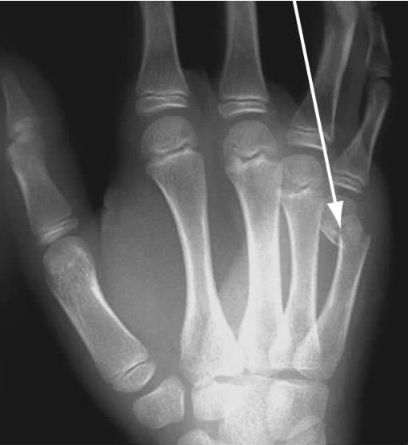
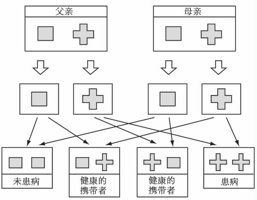
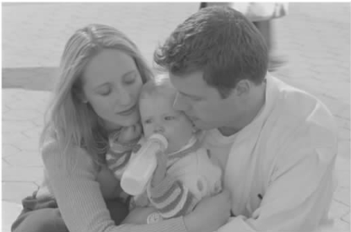

（蒙田，《孩子与父亲的相似性》）
第五掌骨从手掌外侧手腕处延伸到小指根部。发生在这根骨头指关节处的骨折只有一种原因：握紧拳头打某人或某物。患者当然可能不会承认这一点，但是骨折揭露了真相。
现代遗传学日益发展，不仅能揭示过去还能预测未来，而且更加深入。个人的基因测试结果能给出关于亲属的信息。这在现代遗传学出现前只能达到有限的程度。现在实现这些可能性的范围扩大了，这种扩大让我们必须重新思考医疗保密。
第五掌骨骨折

图20 秘密被揭露了。靠近第五掌骨指节处的骨折的唯一原因是什么？
让我们从揭示秘密开始吧。下面是发表在《柳叶刀》上一个现代遗传学服务方面的现实案例。
在与遗传学家的第一次会面中，这对夫妻被告知他们将来的孩子有这种情况的概率是25（见图21）。这是建立在约翰是莎拉新生儿的亲生父亲的假设上的。

图21 常染色体隐性遗传。
然而，DNA样品的分子分析却显示约翰不是孩子的父亲。这说明未来约翰和莎拉的生物学孩子实际上不太可能有这种衰弱的情况。因为大概1000人中只有一个人会携有这种隐性基因。几乎能肯定约翰有正常的基因，这就防止了他的小孩会出现这种情况。
遗传学家应该把约翰不是新生儿亲生父亲的这个事实告诉他吗？
一份重要的美国报告建议在这种情况下应该对夫妻二人都坦白。但是这份报告倾向于一种诚实且开放的方式。有影响力的美国医学会遗传学风险评估委员会建议在这种情况下只告知女方，并且认为“基因测试不应被用于扰乱家庭”。美国和欧洲的大部分调查显示，大部分遗传学家支持后一种方法。1990年一个跨文化比较论证了“对母亲隐私的保护重于真实父子关系的揭露”。

图22 DNA测试显示这个男人不是孩子的父亲，而他还不知道。基因咨询医生应该告诉他什么？（图为模特）
很多遗传学家会说谎或者蒙混过关，例如声称出现这种症状的孩子是新变异的结果，而不是跟父母坦白。与医生相反，一份美国患者的调查显示，四分之三的被调查者认为，医生应该告诉丈夫他不是孩子的父亲，至少在父亲直接问的情况下。大部分被调查者是女性。
被称为医学之父的希波克拉底于公元前460年左右出生在希腊的科斯岛。希波克拉底誓言是已知最早的医生职业守则。其中一些现在看来似乎过时了。我教的医学院学生不太可能如希波克拉底誓言要求的那样重视他们对我的义务了。
但是誓言中关于保密的部分与现实更相关：
为了继续追踪保密范围的问题，我将做一个案例比较：考虑跟我刚刚讨论案例的有相似之处的如下一个案例，但是在这个案例中医生应如何做也许更加明显。
图23 希波克拉底，出生于公元前460年左右，以他的名字命名了希波克拉底誓言。这是医疗保密的起源，但是在现代遗传学的时代又该如何诠释它呢？
在这样一个案例中，显然医生不应该泄露玛丽的秘密。医生和其他专业人士在决定做什么时必须认真考虑职业守则。如果一个医生违背了职业守则，他得有非常好的理由。
综合医学委员会是英国医生的职业团体。它的指导方针里有以下陈述：
在将这些守则应用到特殊场合时，我们必须先做些解释。在这个案例中，这些解释是相对直白的。对彼得保密不会使他“面临死亡或严重伤害的风险”，因此医生不应揭露玛丽的秘密。
如果案例2中的医生不应揭露秘密，这是遵循案例1中遗传学家应对父子关系问题保持沉默这一观点吗？
这两个案例有个重要的区别。案例1中，无父子关系是在约翰和莎拉都同意做的测试中发现的。案例2中，这个事实只是由玛丽揭露的。在案例1中，约翰和莎拉一起向遗传学家咨询一个他们共同关心的问题。父子关系的信息与他们一起会见遗传学家直接相关。只通知莎拉一人就没有尊重约翰获取信息的权利。
上面的案例比较给我们留下了问题：案例1中的遗传学家应该怎么做？对于案例2的考量提供了遗传学家应该就父子关系对约翰保密的一些原因。但是案例2与案例1在一些重要方面的不同点足以使一切都不同。
或许我们能从回顾理论和探索医疗保密为何重要的根本原因中得到帮助。对这个问题有三个普适的答案：尊重患者的自主权，达成默契和取得最好的结果。
尊重隐私权
医学伦理学的一个重要准则是尊重患者的自主权。这个准则强调了患者掌控自己生活的权利。这个准则意味着总的来说，个人有权利决定谁能得知自己的私人信息，即隐私权。基于这个观点，向医生透露个人信息的患者有权决定知道这个信息的其他人。这就是医生不应该未经患者允许将信息透露给第三方的原因。
默契
一些人认为医生和患者之间存在着潜在的契约。其中包含医生暗示保证不会透露患者的秘密。因此患者会理所当然地相信，他们见医生时所说的一切会被保密。基于这一观点，医生不应揭露秘密的理由是，如果他们这样做了就等于违背诺言。
最好的结果
伦理学的一个主要理论是，任何情况下正确的做法应该是能带来最好结果的那一种。基于这个观点，医生保守秘密是重要的，因为这样做会带来最好的结果。只有当医生严格保守秘密时患者才会信任他们。这种信任在患者向医生寻求和得到必要帮助时是至关重要的。
这些理论对我们回答下面这个问题有帮助吗：遗传学家应该告诉约翰他不是这个新生儿的父亲吗？
尊重自主权这个理论在应用到案例1时是暧昧不明的，取决于我们侧重于谁的自主权。侧重于约翰的自主权就要告诉他真相，侧重于莎拉的自主权就要保守秘密不让约翰知道（除非莎拉同意告诉约翰）。
默契理论同样存在问题。在正常的临床实践中，如案例2所示，很明显患者（玛丽）能预测到医生会尊重她的秘密。但是在案例1中潜在的“契约”就不那么明显了。约翰可能想当然地认为所有信息跟未来生育选择相关，应该由他和妻子共享。
效果论者的考量当然给出了医生不应透露秘密的原因，因为对家庭可能造成有害的影响。这是大多数遗传学家选择不告诉约翰他不是莎拉孩子亲生父亲的主要原因。但是也不能断言对约翰保密的结果就比告诉他真相来得好。保护莎拉免遭自己行为的恶果是正确的吗？保密对这个家庭更好吗？这是效果论存在的一个主要实际问题：即使你认为效果论是正确的道德理论，通常我们不可能足够确定地判断出不同行为引起的各种不同结果。
这样看来，回到保密的道德重要性依据的基本理论，不比案例比较更有用。我们仍然不确定医生是否应该告诉约翰他不是莎拉孩子的亲生父亲。我认为困难在于我们弄错了问题的重点。关键问题不是是否有足够的理由维护约翰的利益而透露莎拉的秘密。关键问题是新生儿不是约翰亲生的这一信息（与约翰现在的想法相反）属于约翰和属于莎拉的程度是否一样。它是谁的信息？让我们通过另一个案例来讨论这个问题。
（帕克和吕卡森，《柳叶刀》，2001年，第357卷）
我现在暂时把以下问题放到一边：如果珀涅罗珀的胎儿携带了致病基因，那么她是否应该终止怀孕。帕克和吕卡森提出了两种模式：个人账户模式和联合账户模式。
个人账户模式
个人账户模式是医疗保密的传统观点。基于这个观点，海伦的基因状况（作为杜兴肌营养不良基因的携带者）属于且只属于海伦一个人。尊重这种秘密是重要的。但是，如上文引用的综合医学委员会的指导方针所强调的，这种保密有局限已成为共识。但是这些局限是特例。基于这个观点，关键问题是如果信息不被公开，对珀涅罗珀可预见的伤害是否足够严重，从而可以证明揭露海伦的秘密是正当的。
联合账户模式
在联合账户模式中，基因信息就像一个联合银行账户，是多人共享的。海伦的要求不符合正常的保密范围，可以将其视作要求银行经理不要将联合账户的信息透露给其他该账户的持有者。基于这个观点，应该用一种完全不同的方式来看待遗传信息和大多数医学信息。它应该是由所有“账户持有者”（所有遗传上相关的家庭成员）共享的。也就是说，除非有很好的理由，否则不能隐瞒信息。
这两种模式在共享信息的证据责任方面持相反态度。按照传统个人账户模式，我们会问：对珀涅罗珀的伤害可以超过海伦的保密权利吗？按照联合账户模式，基因信息尽管是从海伦的血液和医疗记录中获得的，却属于整个家族。珀涅罗珀有权利知道这些信息，因为这对她了解自己的基因组成有着重要的意义。要证明因海伦的利益而不让珀涅罗珀得知DMD基因测试结果是正当的，需要很好的理由。
海伦不仅掌握了自己和儿子的一些信息，同时还掌握了珀涅罗珀和她未出生的孩子的一些信息。海伦知道珀涅罗珀的胎儿有很大可能会患上DMD，但是珀涅罗珀并不知道这些。这种信息的不对称对于珀涅罗珀并不公平。个人账户模式没有将这个事实考虑进去。
在北欧和北美，遗传信息常常挑战了医学伦理学讨论中做出的很多道德假设的个人主义本质。或许我们一直在讨论的案例在其他一些情况下引发了一个更深层次的医疗保密问题。我们在生物和社会的层次上都是彼此联系的。没有人能完全独立于世外。如下章所述，我们彼此间的联系不仅局限于近亲之间，而且是跨越整个世界的。